Organising Committee
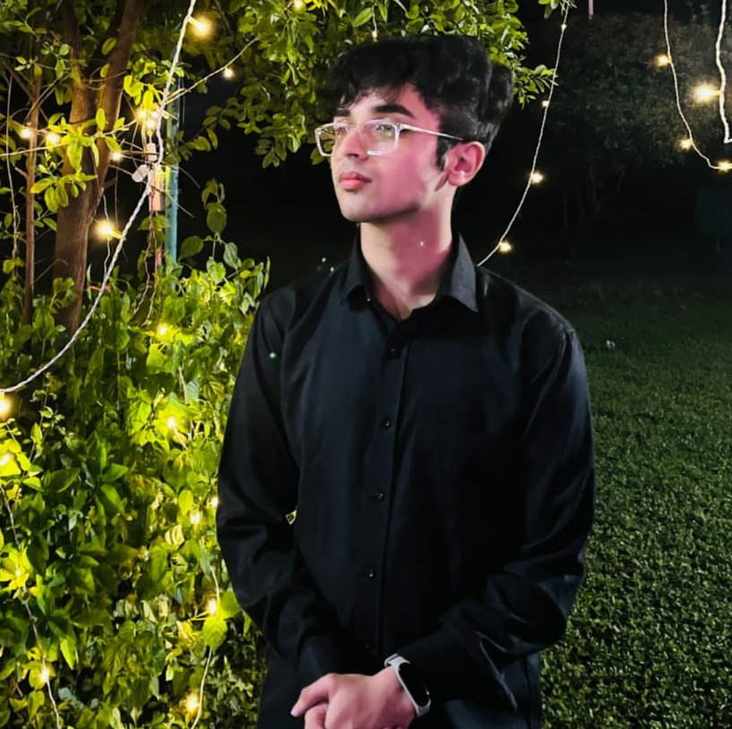
Parth Sidhu
Secretary-GeneralParth serves as the Secretary-General of GSV Model United Nations 2026, the inaugural MUN conference of Gati Shakti Vishwavidyalaya. As the Co-Coordinator of the Debate & Quiz Club and the Event Head of the conference, he has been at the center of bringing this vision to life. Having previously conceptualized and co-coordinated flagship events such as "Courtroom Chronicles", he brings a strong foundation in debate, leadership, and conference organization. From shaping the structure of the conference to designing and developing the official website of GSV Model United Nations 2026, he has been closely involved in building the platform upon which this conference stands. But more than an event, GSV MUN represents the beginning of a tradition. Through this conference, he seeks to create a rigorous and intellectually charged forum where delegates confront complex global realities, challenge assumptions, and engage meaningfully with the principles of diplomacy and international cooperation. As the founding Secretary-General, his ambition is simple yet enduring — to lay the foundation for a culture of diplomacy, debate, and fearless intellectual exchange at Gati Shakti Vishwavidyalaya.
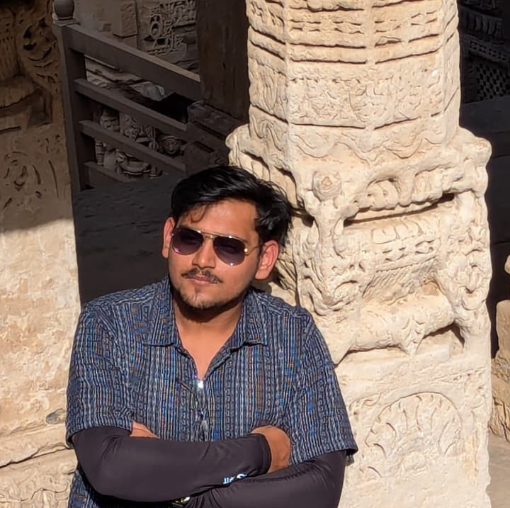
Aayush Agarwal
Director-GeneralAs the Director General of the Model United Nations, Aayush Agarwal brings strong leadership and coordination experience through his active involvement in intellectual forums. Currently serving as the Coordinator of the Debate and Quiz Club, he has consistently promoted critical thinking, public speaking, and meaningful dialogue within the student community. With prior experience as PR Coordinator and involvement in organizing events such as Youth Parliament, Courtroom simulations, and debate competitions, he has developed the organizational and communication skills required to manage dynamic platforms. As Director General, he is committed to ensuring the smooth functioning of committees while upholding the academic and organizational excellence of the conference.
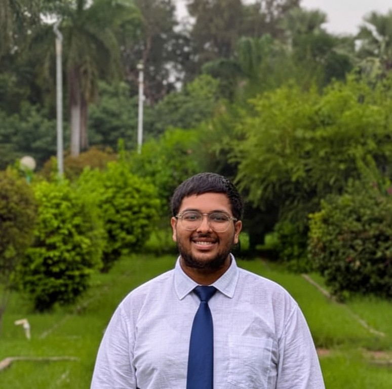
Abhinav Mishra
USG Delegate AffairsAbhinav Mishra serves as the USG – Delegate Affairs for GSV Model United Nations 2026, bringing with him considerable experience from the Model United Nations circuit. Over the course of his journey, he has distinguished himself across multiple conferences, earning Best Delegate once, High Commendation twice, and Special Mention twice, reflecting both consistency and excellence in diplomatic debate. Within the university, his contributions extend beyond the committee room. As the Co-Coordinator of Public Relations for the Debate & Quiz Club, he plays an active role in shaping the club’s outreach and engagement. He also serves as the Domain Head of the Profile Development Domain at Technocrats GSV, where he works closely with students to cultivate communication, leadership, and professional growth. Through his role as USG – Delegate Affairs, he is committed to ensuring that every delegate experiences a committee environment that is dynamic, disciplined, and intellectually engaging.
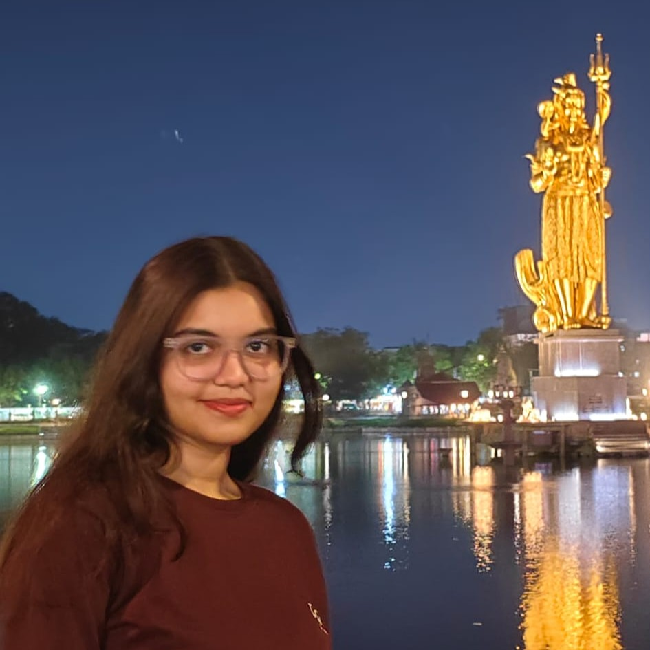
Anjali Chaurasiya
USG LogisticsAnjali Chaurasiya serves as the USG – Logistics for GSV Model United Nations 2026. Having previously served as the Co-Coordinator of Finance for the Debate & Quiz Club, she has been involved in supporting the organizational and operational aspects of the club’s activities. She is currently a part of the Advisory Team of the Club, where she continues to contribute to the planning and coordination of club initiatives. With experience in analytical and project-based work, she brings a structured and detail-oriented approach to the logistical framework of the conference. As USG – Logistics, she works to ensure that the operational side of GSV MUN functions smoothly, allowing the committee to focus on meaningful debate and diplomacy.
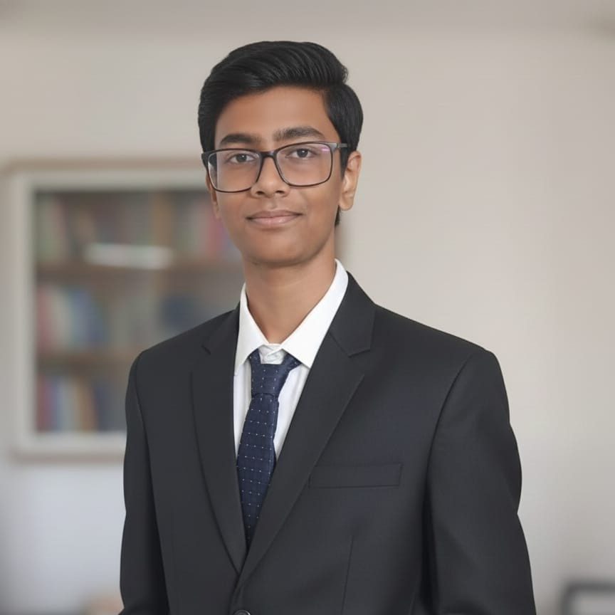
Hrishi Ajoykumar
USG MarketingHrishi Ajoykumar serves as the USG – Marketing for GSV Model United Nations 2026. An active participant in the Model United Nations circuit, he has taken part in conferences such as Kumarans Model United Nations (KMUN) 2022 and RV Model United Nations (RVMUN) 2023 in Bengaluru. At KMUN 2022, he represented the People’s Republic of Bangladesh in the UNGA, engaging with the complex issue of the United States’ withdrawal and the Taliban takeover of Afghanistan, navigating a delicate diplomatic position focused on peaceful resolution. At RVMUN 2023, he served as the delegate of the United Kingdom in the United Nations Security Council, debating the October Israel–Gaza conflict within the constraints of international law and geopolitical responsibility. Recognized for his ability to manage public relations and outreach, he now serves as USG – Marketing, where he works to strengthen the visibility and engagement of GSV Model United Nations. His initiative and capability earned him a position in the Secretariat in his very first year of college.
Executive Board
United Nations General Assembly – DISEC
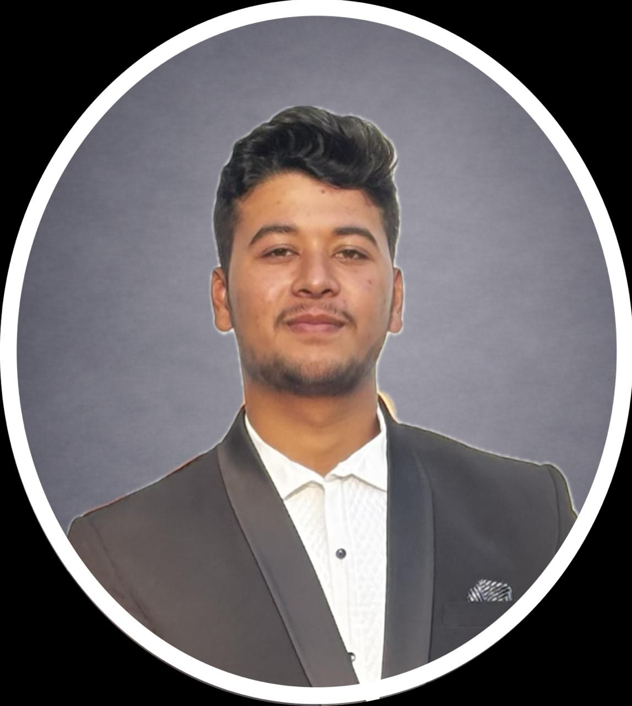
Swapnil Saraswat
ChairpersonWith six Model United Nations conferences behind him, spanning committees such as the United Nations Security Council and UNGA DISEC, and a record that includes one Best Delegate, two Special Mentions, and two Verbal Mentions, he is someone well acquainted with the pressures of the committee room. Yet the most defining moment in his journey is not found in any award. It traces back to his very first MUN, representing Pakistan in DISEC on the agenda of nuclear disarmament — a challenging portfolio in an already tense debate. For the entire first day, he remained silent. On the second day, something changed. He stopped worrying about what the room would think and simply chose to speak. By the end of the conference, he walked away with a High Commendation. That experience shaped his understanding of what true confidence in diplomacy means. Courage in a committee room is not about being the loudest voice — it is about speaking when it matters. As Chair, he will uphold the highest standards of committee procedure, maintain an unwavering commitment to neutrality, and ensure that every delegate — especially those who hesitate to speak — understands that their voice has a place at the table.
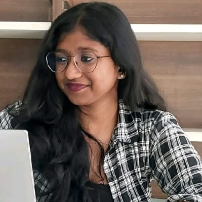
S. Pranathi
Vice ChairpersonMeet S. Pranathi, the Vice Chair of the committee, an enthusiastic MUNer with a keen interest in diplomacy, strategy, and dynamic debate. Having previously participated in conferences including BITS Hyderabad MUN, she brings with her an appreciation for well-researched arguments and thoughtful discourse. Pranathi believes that the most memorable committees are those where ideas clash, alliances form, and solutions emerge through thoughtful negotiation, and she looks forward to fostering a committee that is engaging, intellectually stimulating, and dynamic.
Volunteers
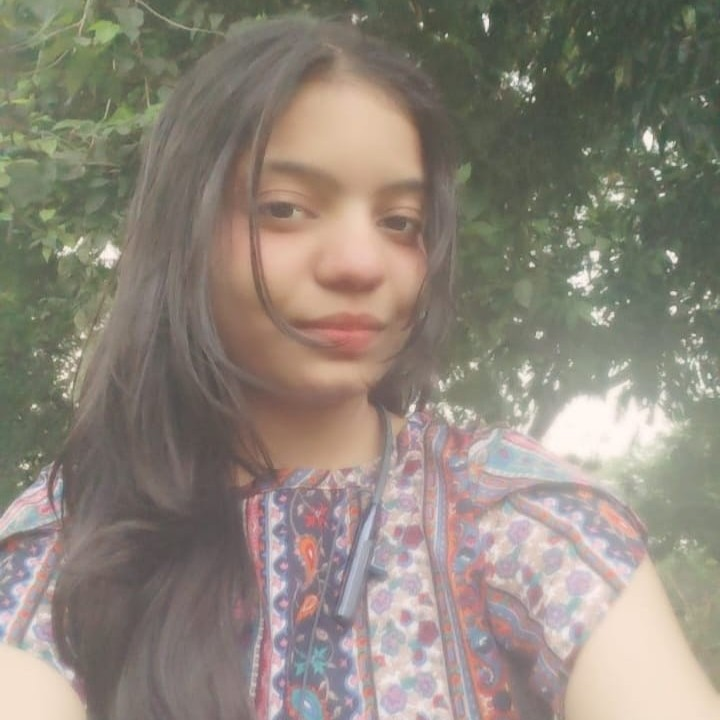
Shreya Gupta
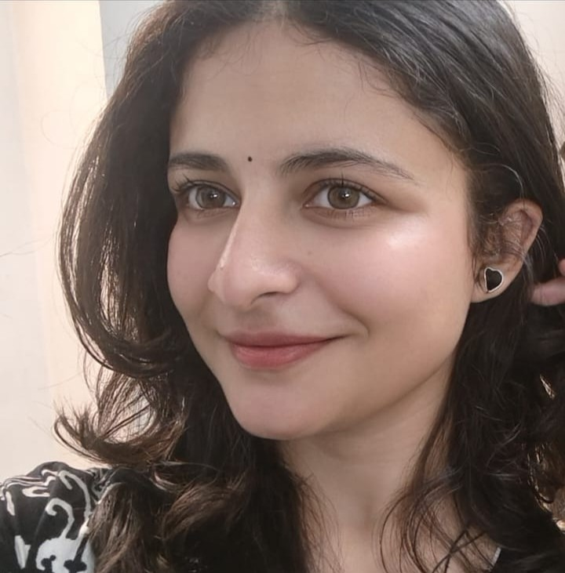
RL Nishita Abhinav
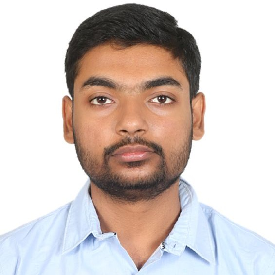
Deepanshu Rathore
Special Thanks
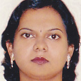
Dr. Abhilasha Saxena
Faculty Advisor
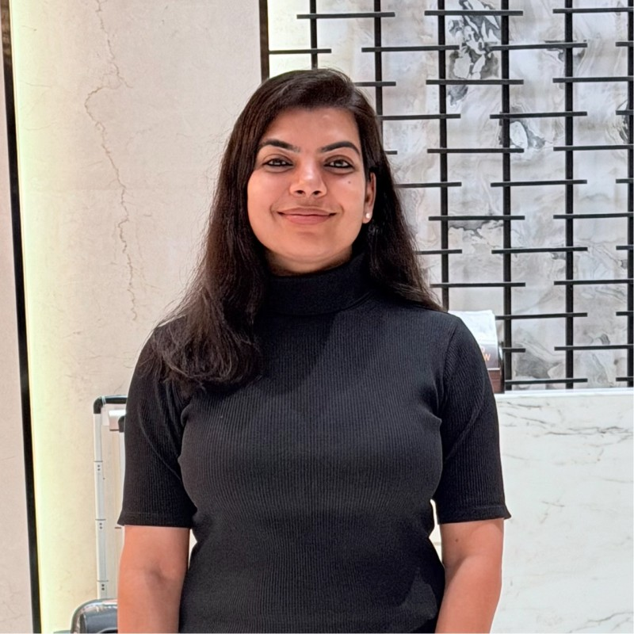
Dr. Priyanka
Faculty Advisor
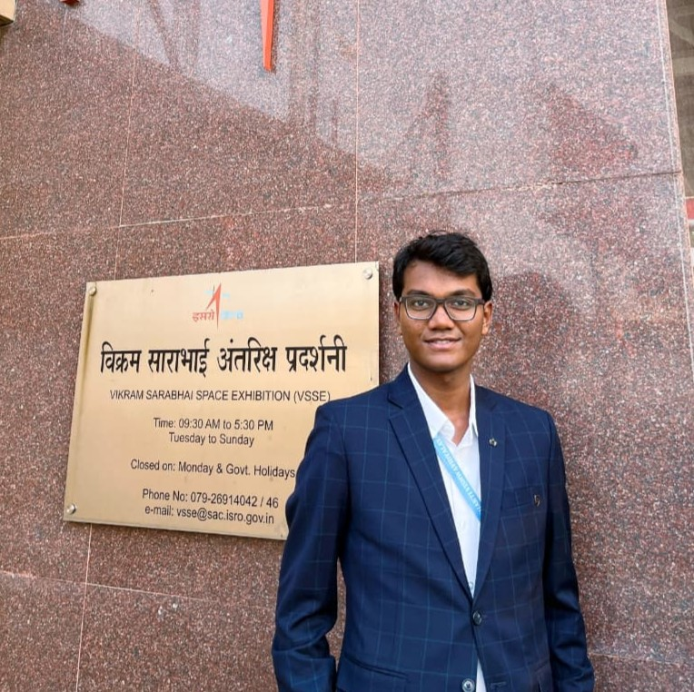
Himanshu Xalxo
Logo Designer
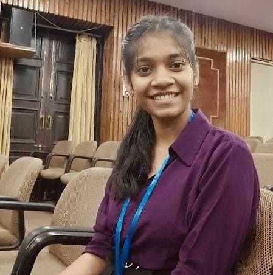
Amisha Singh
Media Wing
We extend our deepest gratitude to the Student Cell @GSV and the EPITOME '26 Organising Committee for their unwavering support and guidance in bringing this conference to life.